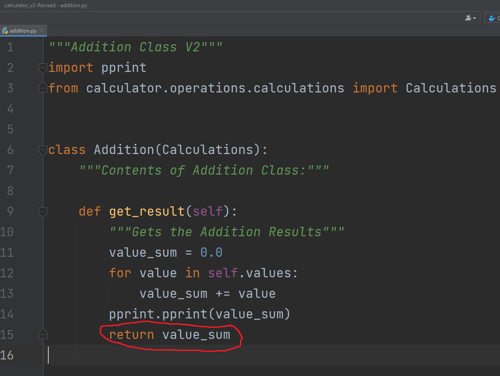

This page will prove what parts of my code possess Inheritance, Abstraction, Encapsulation, Polymorphism
The part of my calculator_v2 project that would represent Polymorphism would be in calc_test.py. The rationale behind my logic is that I can create multiple tuples that are used in the same function call. Theoretically, I can run addition or any other operation as many times as I want through calc_test.py and that will keep providing me with new values for the results. I even added a new method to validate the process. Therefore, the entire calc_test.py file serves as a means of Polymorphism.
With the pictures given, the "test_calc_polymorphism" function was made to prove that I can make two separate tuples that can run the same math operation. In my case, I used addition since it was easier. However, that testing can be applied to the other operation. The pylint check validates that there is no error with both tuples be added. I do believe that concept works in history_test.py with the function that can remove a value from the list of calculation.
The part of my calculator_v2 project that would represent Inheritance would be in the operations directory . This directory possesses all the operations including calculations.py. This file is what takes in the tuples that are inputted. It is the addition class from addition.py that would use the tuples from the calculations class from the calculations.py file. The same applies for all the other operations in that directory.
The pictures depicts the process to complete a given operation. When calc_test.py runs the addition operation, the addition class will send the tuple over to the calculations class for addition to be able to add the values with the tuple. The addition class inherits the values with the tuple from the calculations class.
As seen from the sections prior, the calculator_v2 project possesses attributes of Object-Oriented Programming. This section is no different. This section is about Encapsulation, but what part of my code protects data from direct modification? It is quite simple because that lies in the operations the return the value. The tuples are taken and perform the desired operation, and we get the result. Yet, we cannot modify that result. While those values can be purged from the history list, it's the history list that is getting modified. Therefore, those result values are never modified.
Yes it is the same picture used in the Inheritance section. The sum that is generated is accessed or modified. It is stored in a list that contains the sum. The list can remove the value from itself which indirectly modifies the sum to not exist.
The last attribute to talk about in Object-Oriented Programming is Abstraction. Although my files do not possess abstract classes or methods, it does do a good job at displaying what is needed. This is mainly evident in both calc_test.py and history_test.py. Both files just show the user that do math operations and modify the history list. Thus, it makes both files not very complex.
The level of complexity increases when having to keep track of what each function does when a user does not understand what the programmer made. At one point, both testing files were merged into one file. The same applies for the calculate.py and calculations.py from the history directory. Although I know how to easily maneuver that code, a simple user would not understand and simply not use the program due to its high level of complexity.